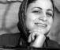

پذيرش > اخبار > دومین نامهی زينب بايزيدی از زندان/ تروریست کیست؟آيا تلاش برای رفع تبعیض میان زنان و (...)


 دومین نامهی زينب بايزيدی از زندان/ تروریست کیست؟آيا تلاش برای رفع تبعیض میان زنان و مردان عملی تروريستیست؟! دومین نامهی زينب بايزيدی از زندان/ تروریست کیست؟آيا تلاش برای رفع تبعیض میان زنان و مردان عملی تروريستیست؟!
13 اسفند 1387 - - نسخه قابل چاپ
تغییر برای برابری -در عصر حاضر كه بحث بر سر جهانی شدن و حقوق بشر بيشترين توجه افراد، گروهها و رسانهها را به خود معطوف داشته است. در عصری كه بيش از هر زمان ديگری مرزها و موانع ميان ملل و فرهنگهای مختلف در حال از بين رفتن است و ابزارهای ارتباطی مدرن شهروندان جهانی را به يكديگر پيوند میدهد. بهترين اين شهروندان آنانی هستند كه بيشترين احساس مسئوليت را در برابر همنوعان خود دارند و برای رفع بحرانهای بشری در گوشه و كنار جهان میكوشند.
آنگونه كه پيداست امروزه زندگی افراد بشر طوری به هم پيوند خورده است كه بیتوجهای نسبت به آنچه در جهان پيرامونت و در رابطه با ديگر انسانها میگذرد نوعی بیتفاوتی به خود و خانواده بشری محسوب میگردد. اما در بسياری از موارد ديده میشود كه هنوز با گروههايی از جامعهی بشری رفتارهای غيرانسانی صورت میگيرد. از آن جمله برخوردهای دول سركوبگر با ملت كُرد است.
كُرد بودن و ابراز وجود كردن با اين نام و مطالبهی حقوق ابتدايی و انسانی از سوی اين مردم تاوانی سنگين خواهد داشت. تاوانی كه توسط حاكميت بر مردم و فعالان كُرد تحميل میگردد. اما با اين وجود ساليان درازیست كه اين خلق ضمن تحمل رنجها و مرارتهای بسيار در راه برخورداری از حقوق خويش با مبنا قرار دادن اصل نخست منشور جهانی حقوق بشر مبارزه كرده و میكند.
اكنون با گذار از مرحلهی سخت برده داری و فئوداليسم، بشر با وجود معضلات خاص سرمايه داری تجاربی به دست آورده است و در كنار اين تجارب وسايل ارتباط جمعی و امكان برقراری راحت و سريع ارتباط بين انسانها و نيز وجود نهادهای بشردوست و گسترش و تقويت جامعهی مدنی تا حدودی امكان انعكاس صدای طبقهی زيردست را فراهم آورده و توانستهاند كه صدای خود را به گوش جهانيان برسانند و موفقيتهايی را كسب نمايند. هر چند اين موفقيتها بيشتر از آنكه در ميان كشورهای جهان سوم بروز يابد در سطح كشورهای پيشرفته به چشم میآيد.
در ايران سالهاست مردم برای رسيدن به دموكراسی تلاش میكنند و طی چند سال اخير شاهد شكلگيری و رشد جامعهی مدنی بودهايم. كُردها نيز همواره سعی در مطرح ساختن خواستههای انسانی خود داشتهاند و در راه مبارزه برای كسب حقوق خويش متحمل هزينههای گشته و بهای آن را نيز پرداختهاند. بهايی به قيمت خوردن برچسبهايی چون تجزيه طلب، تروريست و محارب و در نتيجه دريافت حكم حبسهای طويل المدت و حتی اعدام.
حق و حقوق طبيعی كُردها به آنها داده نمیشود و در مقام شهروند درجهی دو به حساب میآيند. هميشه به كُردها با ديدی امنيتی نگريسته شده و به بدترين شكل ممكن سركوب شدهاند و تلاشهای آنان برای ايجاد دوستی و گسترش همكاری و سعی در از بين بردن چالشها با واكنش منفی مواجه شده است. برخوردهای شديد با فعالان كُرد به خوبی نمايانگر اين واقعيت است.
كنشی كه از سوی فعالان در سراسر ايران انجام میگيرد و فعاليت مدنی خوانده میشود به كردستان كه میرسد انگ تروريستی میخورد. كوششهای حقوق بشری كه جزو افتخارات انسانی محسوب میگردد و از تلاشگران اين عرصه حمايت و تقدير میشود، متأسفانه در ايران مورد بیحرمتی قرار میگيرد و با نسبت دادن اتهامات واهی از فعاليتشان جلوگيری به عمل میآيد. مگر آنكه اين كوششها در چهارچوب مشخص شده و در خدمت منافع ايشان قرار گيرد كه در اين صورت ماهيت حقيقی و انسانی خود را از دست میدهد. به عنوان نمونه میتوان به حكم ده سال زندان برای محمدصديق كبودوند رئيس سازمان دفاع از حقوق بشر كردستان كه به عنوان پدر حقوق بشر در كردستان شناخته میشود اشاره كرد و نيز برخوردهای صورت گرفته با ديگر فعالان اين سازمان.
كُردها حتی اگر در فعاليتهای سراسری و مشترك با فارسها و آذری ها و... برای رسيده به اهداف مشترك انسانی شركت كنند و در اجتماعات پايتخت نيز حضور يابند باز هم آشوبگر خوانده میشوند. برای مثال فعالیت زنان کُرد در حوزههای زنان و همراه با دیگر زنان آزادیخواه در ایران برای تغییر قوانین تبعیض آمیز و متعهد ساختن دولت به اجرای كنوانسيونهای بينالمللی در ايران، كه باز در اينجا همان اتهامات محاربه و تروريست برای فعالان كُرد در حوزه زنان مطرح میشود و برای آنان احكام سنگين صادر میگردد.
همهی اين موارد و بسياری موارد ديگر در ايران جرم قلمداد میشود و به كردستان كه میرسد اين جرمها سنگينتر خواهد شد تا آنجا كه حتی فعاليتهای مدنی نيز به تجزيه طلبی و تروريستی تعبير میگردد، در حالی كه مبارزات زنان و مردان كُرد تنها در راستای رفع تبعيض جدای از نژاد و ملت و مذهب بوده است.
حال خطاب به وجدان های بيدار میپرسم به راستی تروريست كيست؟ کسانی که مایهی ترس و وحشت در بین مردم هستند یا کسانی که از حقوق طبیعی خود و مردمشان دفاع میکنند؟
آيا تلاش برای اجرایی کردن اعلامیهی جهانی حقوق بشر عملی تروريستیست؟!
آيا تلاش برای پايان دادن به جنگ و خونریزی عملی تروريستیست؟!
آيا تلاش برای ریشهکن کردن فقر و گرسنگی عملی تروريستیست؟!
آيا تلاش برای رفع تبعیض میان زنان و مردان عملی تروريستیست؟!
اگر همهی اينها در كنار عشق ورزیدن به انسانیت و ميل به آزاد زيستن عملی تروريستی خوانده میشود، پس چه باك از خوردن انگ تروريست و تحمل حبس در كنار روناكها و حتی اعدام شدن با فرزادها و ديگرانی كه جرمشان تنها طلب حقوق انسانی و حق آزاد زيستن است.
ارسال به
بالاترین
،
توییتر
،
فریندفید
،
فیسبوک
در همين بخش :
 پروین ذبیحی برنده جایزه حقوق بشری سازمان غيردولتى اتريشى سودويند شد پروین ذبیحی برنده جایزه حقوق بشری سازمان غيردولتى اتريشى سودويند شد
پخش کارت پستال و بروشور در روز جهانی زن در تهران
تمدید زمان برای امضای بیانیهی جمعی از فعالان زن به مناسبت هشت مارس
مجوزی که در نطفه خفه شد
بیش از 2000 امضا در اعتراض به تبعیض های آموزشی به مجلس تحویل داده شد
ديگر بخش ها :
طرح یک میلیون امضا
|
مقالات
|
سایت نوشته ها
|
اخبار
|
گزارش كمپين
|
گفت و گو
|
علیه سکوت
|
كوچه به كوچه
|
نامه های شما
|
گزارش ویژه
|
گفتگو با اعضا
|
ویژه سالگرد کمپین
|
تصویر برابری
|
دل آرام علی
|
تریبون
|
مقالات
|
تاریخ شفاهی
|
خارج از چارچوب
|
کتابخانه
|
درباره کمپین
|
کمپین در شهرها
|
کمپین در بند
|
صدای تغییر
|
ویژه 22 خرداد
|
لایحه حمایت از خانواده
|
گالری
|
عشا مومنی
|
امیر یعقوبعلی
|
خدیجه مقدم
|
راحله عسگری زاده و نسیم خسروی
|
پروین اردلان،جلوه جواهری، مریم حسین خواه، ناهید کشاورز
|
زینب پیغمبرزاده
|
سعیده امین، سارا ایمانیان، محبوبه حسین زاده، ناهید کشاورز و همایون نامی
|
احترام شادفر
|
نسیم سرابندی زاده،فاطمه دهدشتی
|
وبلاگ مهمان
|
پرونده خرم آباد
|
دستگیری ها
|
مریم مالک
|
پرستو اللهیاری
|
مهرنوش اعتمادی
|
سمیه رشیدی
|
Other Languages
|
همراهان
|
«فراخوان کمپین ده روز با بهاره هدایت»
| English
|